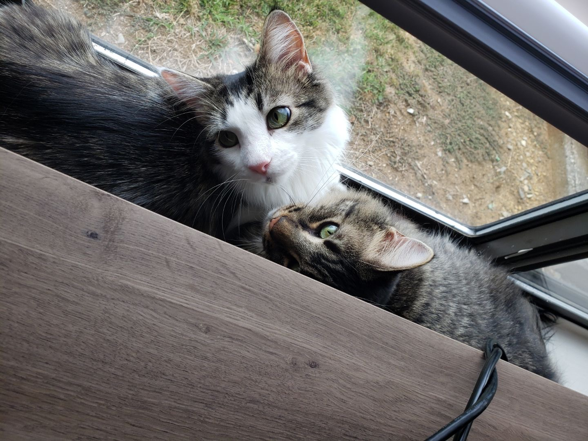

Welcome to Samantha's Cat Website
Samantha's Cat Project shows how modern tech can make taking care of cats both simple and fun. By mixing smart gadgets with real care, she proves that keeping your cat happy doesn't have to be complicated. With this project, Samantha wants to highlight that by using advanced tools, everyday tasks can become easier, leaving more time for building a genuine bond with your furry friend. One of the coolest parts of her project is the use of automatic litter boxes and food dispensers. These gadgets handle routine chores like cleaning and feeding, which means you don't have to stress about them all the time. It gives pet owners the confidence that their cats are getting consistent, on-time care, making the whole process more convenient and hygienic.
But technology isn’t the whole story. Samantha also stresses the importance of playing and interacting with your cat. Even though gadgets can take care of the mundane tasks, the real joy of owning a cat comes from those moments of play and affection. Whether it’s chasing a toy or simply cuddling, these interactions are crucial for keeping your pet mentally and physically stimulated. Overall, Samantha's Cat Project is all about finding the perfect balance between modern convenience and heartfelt care. Automatic litter boxes and food dispensers make daily maintenance a breeze, but it’s the quality time you spend playing with your cat that truly creates a loving home. This project shows that with a little help from technology and a lot of love, taking care of your cat can be both efficient and deeply rewarding.